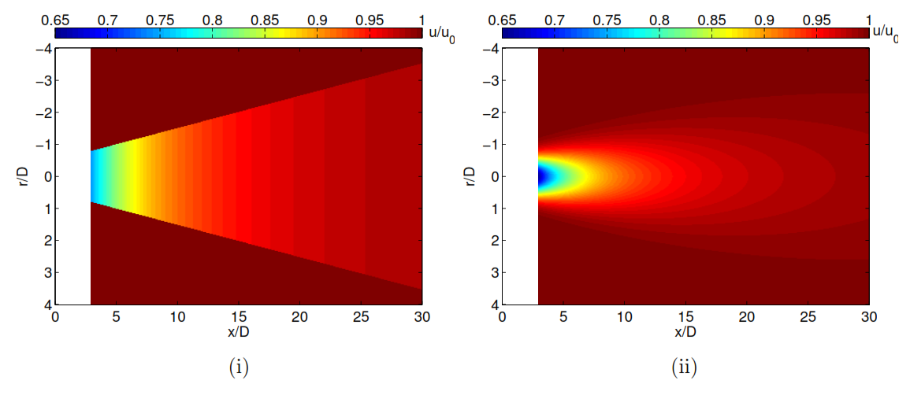

Designing highly efficient Wind Farm Layouts
By Leandro Parada P.
The Wind Farm Design process is a major determinant of overall wind farm efficiency, and therefore, of its power output. A crucial step in Wind Farm Design is determining the localization of each turbine within the terrain boundaries—also known as wind turbine micro-siting or Wind Farm Layout Optimization (WFLO). Using a robust wind turbine micro-siting approach can lead to considerably higher efficiencies and to layouts less sensitive to wind direction (see Figure 2). Moreover, an increase in de 3%-10% in efficiency can be achieved by optimizing a wind farm layout.
I have developed and implemented different models and solution methods for the WFLO problem. Among these, I have presented a novel model using a Gaussian-based wake model (GWM). This wake model is in agreement with wind tunnel measurements and fluid dynamic simulations. Previously, all WFLO studies in the literature used the Jensen wake model—a model not in agreement with wind tunnel measurements (figure 1). An important finding of this article is that higher annual energy generation can be achieved when using GWM, though the difference may be relatively small for complex wind scenarios. You can find this article here.
Figure 1. Wake development of a single wind turbine calculated by (i) Jensen’s Wake Model (ii) Gaussian-Based Wake Model [1].
In another article, we have compared general wind farm design rules—which give rise to regular-arrayed layouts—to wind farm layout optimization techniques. The objective of this study was to quantify the energy and efficiency benefit that these techniques may have over regular design rules. Figure 2 shows a comparison of an regular-arrayed wind farm layout (Horns Rev I, Denmark) and an optimized layout. On average, 4.09% and 2.18% higher efficiencies were obtained using WFLO techniques. You can find this article here.
Figure 2. Comparison between wind farm layouts in Horns rev (i) Regular (ii) Optimized [2].
[1]
Parada, L., Herrera, C., Flores, P., & Parada, V. (2017). Wind farm layout optimization using a Gaussian-based wake model. Renewable energy, 107, 531-541.
[2]
Parada, L., Herrera, C., Flores, P., & Parada, V. (2018). Assessing the energy benefit of using a wind turbine micro-siting model. Renewable Energy, 118, 591-601.